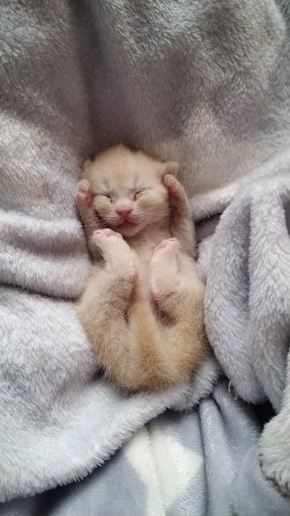

The Birth of Whiskers
Whiskers was born on a warm spring day in a cozy corner of the house. Her tiny paws and soft fur were just the beginning of the adventures ahead. Whiskers opened her eyes for the first time and looked around with curiosity. She was ready to take on the world.
